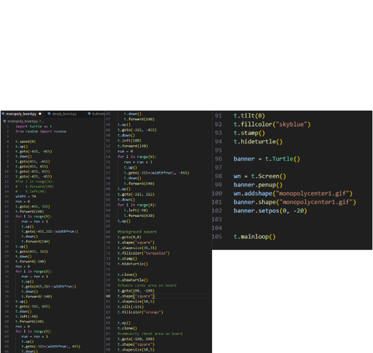
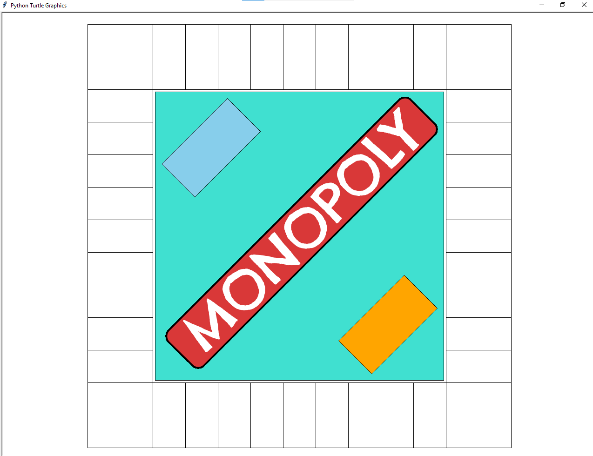
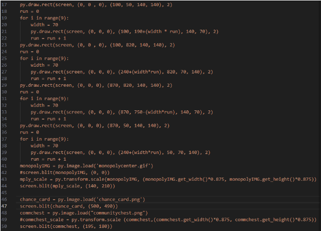
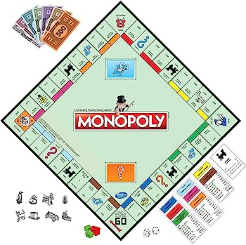

| Home Page | Our Team | Our Projects | Login Here |
|---|
To start off the project, after we came up with a list of things we wanted/needed in the game, we used Turtle in Python to create the game board. This is the final piece of code we used in this stage of the project:
By using for loops, we were able to make the task of drawing the lines less tedious. In order to add some of the more finer details, like the logo and the card locations, we searched up how to “rotate” shapes. Because of the limitations of Turtle, many of these objects had to be created outside of the code before being added in. This is seen from lines 96 - 102. The final product looked like this:
Unfortunately, we realized that it would be impossible to add in the mechanics of the game without using pygame. This was especially problematic because we couldn’t find any way to connect turtle and pygame together. Because of this, we had to remake the code for the board again, this time in pygame. This is the code we used for that:
This is a version of the board game, Monopoly, created using python. But wait! There's a twist. We're putting our own spin to the game by accounting for inflation. The more money players earn, the higher the prices go! The goal of this project is to explore how python works. In order to create the board for the game, we first used turtle in order to get a general idea of how it would look like. After making this, we switched over to pygame and remade the board. This was because we learned that we couldn't connect turtle and pygame together. After creating the board, we started developing the mechanics of the game. First, we created a dice system that would add the results of two dice to come up with how many spaces a player could move. Then, we made the characters that the players would control. We were able to create a movement system that was linked to the dice system, allowing for the pieces to move according to their dice role. As of now, we have created two characters for the player to move. We plan on adding the following mechanics to the game including, but not limited to: a system to determine whose turn it is, the properties that the players will buy, a jail, a monetary system, and the chance and community chest cards.
